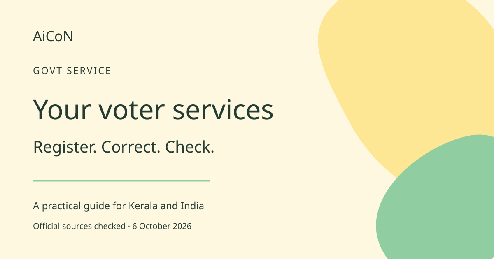

Voter services: register, correct and download e-EPIC
Use the Election Commission portal for registration and corrections. Check the electoral roll as well as your voter card.

What can the portal do?
The Election Commission of India, or ECI, runs the Voters' Services Portal. It offers registration, corrections, replacement-card applications, digital-card download, polling-station details and tracking. EPIC means Elector's Photo Identity Card. e-EPIC is its electronic version. Kerala uses the same national portal. Choose your actual ordinary residence and constituency. Form 6 guidance permits English or the state's official language; Malayalam entries are not a reason for rejection.
Who can register?
A general elector must be an Indian citizen, ordinarily resident in the relevant constituency and not disqualified. The official age requirement is 18 on a qualifying date: 1 January, 1 April, 1 July or 1 October of the revision year. Check current instructions if you are approaching 18. ECI lists Aadhaar as optional. Do not create a second enrolment just because you moved.
Choose the right form
Form 6 is for new general-voter registration. Form 6A is for overseas electors. Form 7 is for an objection or deletion. Form 8 covers shifting residence, correcting an existing entry, replacement EPIC and marking a person with disability. Choose the task, not just a form whose name looks familiar.
How to apply, step by step
- Open voters.eci.gov.in, preferably through ECI if you are unsure about a link. Register using your mobile number or sign in.
- Search your existing electoral-roll entry first. If already registered, choose an update rather than a second new application.
- Select the right form. Read its current evidence and photograph requirements. Prepare clear copies.
- Fill the details and check spelling, birth date and address. Upload requested evidence and read the declaration before submission.
- Keep the reference number and use Track Application Status. Submission is a request, not immediate approval.
- Respond to electoral-authority verification. A Booth Level Officer, or BLO, is the local official who can help. Find the official contact through the portal.
- After processing, check your name, constituency and polling station in the roll. Repeat that check before an election.
How to download e-EPIC
Sign in and choose Download e-EPIC. Follow the portal's identity and mobile-verification prompts. Save it on a device you control. If the record cannot be found or verification fails, use official support. Do not send your documents to a stranger offering an instant card.
Free, paid and India availability
ECI says Form 6 is available free and that EPIC is delivered free after enrolment. You do not need an agent's paid package for official new registration. This is not a promise that every replacement, physical service or optional printing job is free. Read the instructions for your particular request. The portal is for eligible Indian electors, including Kerala residents. Applications remain subject to processing and verification.
AiCoN check and earlier-post correction
The September 28 post's all-free and no-office-visits wording was broader than the checked evidence. New registration is free. Online access does not promise instant enrolment or remove every verification step. A voter card alone is not your roll-status check.
Frequently asked questions
Which form corrects my name?
Form 8 covers corrections to an existing roll entry.
Can I apply offline?
Yes. ECI says Form 6 is available from electoral-registration offices and BLOs.
Where can I get help?
ECI's registration guide gives voter helpline 1950. The portal also helps locate your BLO.
Can I vote just because I have a card?
Check that your name is in the electoral roll. ECI specifically asks registered voters to check enrolment status.
Sources: ECI portal overview. ECI registration guide. Form 6 guidance. Form 8. Checked 6 October 2026.